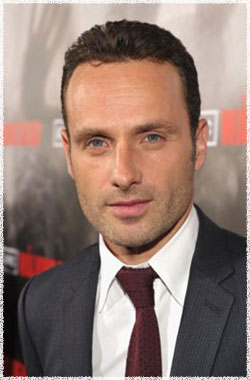

Эндрю Линкольн
 Рик Граймс (актёр Эндрю Линкольн) - полицейский из небольшого городка, живёт с женой Лори и сыном Карлом. В начале истории Рик был ранен в перестрелке и пролежал в больнице в коме. Очнувшись, он обнаруживает что город заполнен зомби.
Эндрю Линкольн (Andrew Lincoln) - родился 14 сентября 1973 года в Великобритании в городе Лондон. Является актёром и режиссёром (сериал Teachers).
Эндрю Линкольн обучался в Королевской академии драматического искусства. Он достиг славы играя роль стажёра адвоката в успешной драме This Life (Эта Жизнь) от BBC. Успех последовал после серии кино и телевизионных ролей, включая сериал Gangster № 1 (Гангстер №1).
В 2001 году Эндрю был номинирован на премию Британской академии кино и телевидения за роль в комедийной драме Teachers (Учителя).
В 2003 году Линкольн был заявлен на роль в романтической комедии Ричарда Кертиса Love Actually (Реальная любовь) в которой снимались многие известные актёры. На протяжении всей своей карьеры Линкольн сыграл несколько разнообразных театральных ролей, которые получили положительные отзывы критиков.
Наиболее известен по фильмам:
Реальная любовь (Love Actually)
Ходячие мертвецы (The Walking Dead)
Грозовой перевал (Wuthering Heights)
В отрыв! (Human Traffic)